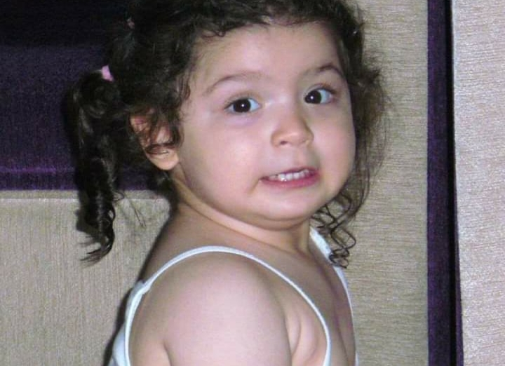
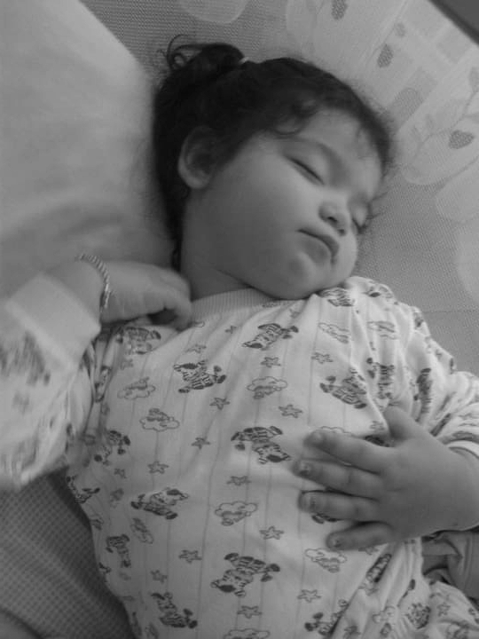
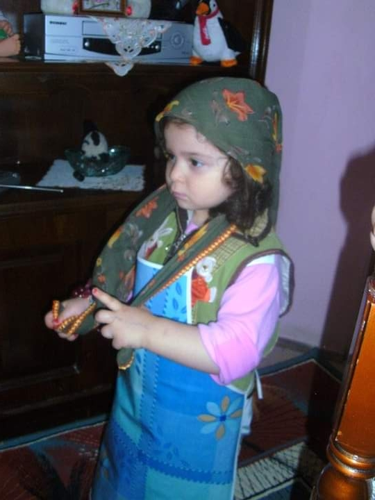
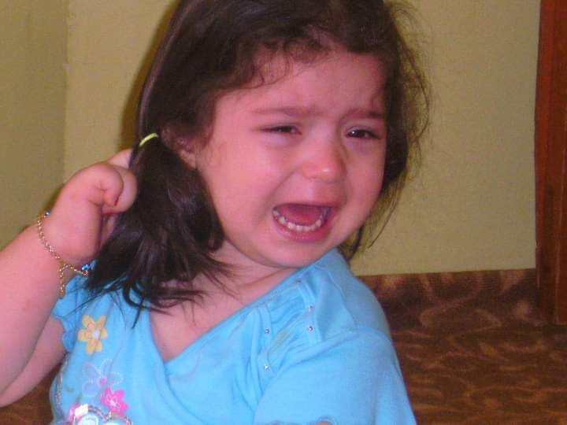
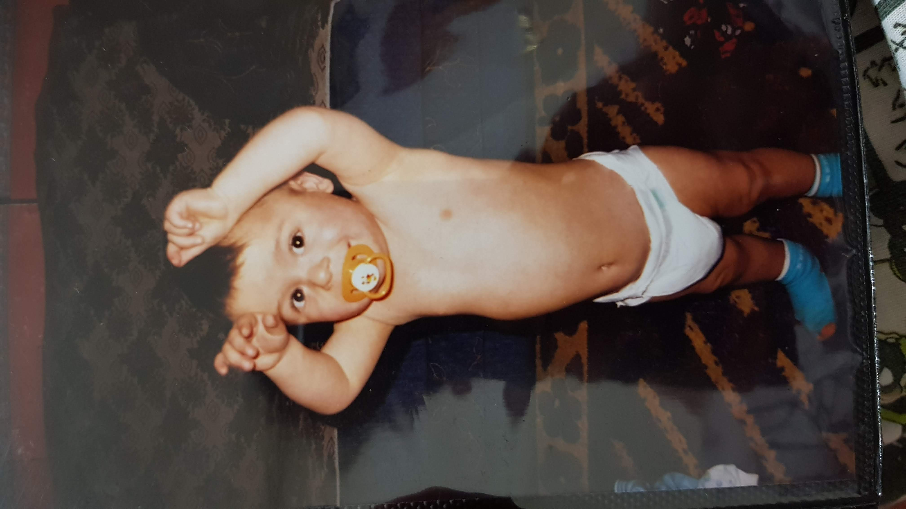
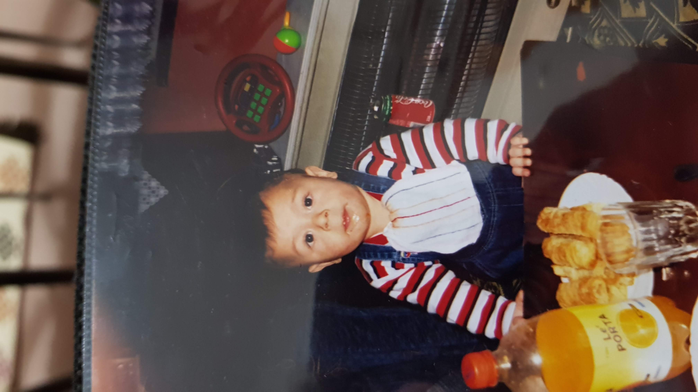
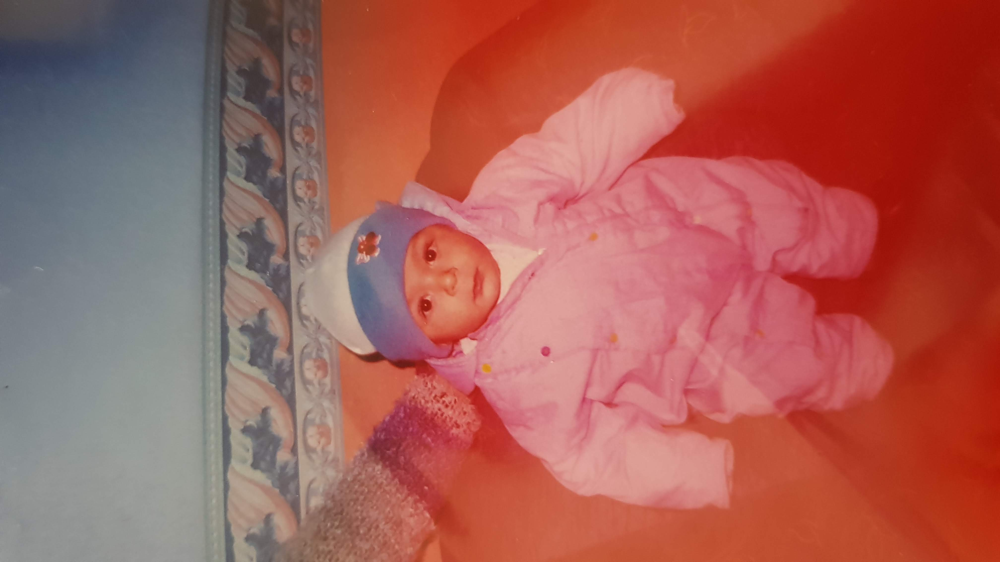
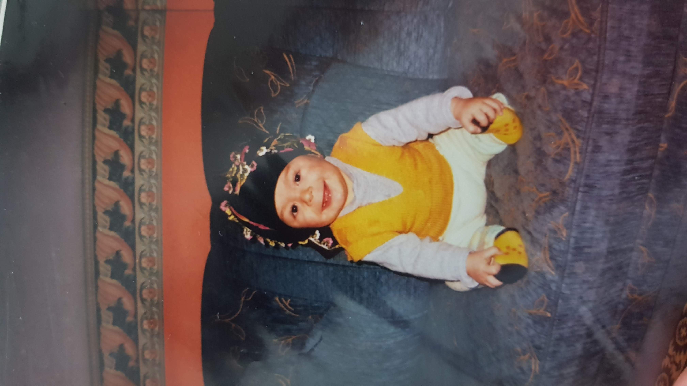

Köşeye sıkıştırmak için en uygun anı bekler. Isırığı hafife alınamaz.

Uykusu geldiğinde kimse onu tutamaz.(Uyurken bile duruşunu bozmaz)

Eli çok lezzetlidir ancak ojeleri her şeyden önemlidir.

Her şeyin mükemmel olması gerek yoksa cinnet onun vazgeçilmezidir.

Duşunu alıp vücut bakımına önem vermesi kokusunu hissettiriyor.

Sabah Akşam Aşçı "Naz" ın yaptıklarını yiyerek göbek yaptı. (Hala aç ve doymuyor)

Hava Durumu onun vazgeçilmezidir nefesini bile hava durumuna göre alır.

Hiçbir şeyi kafasına takmayıp kendini ve sevdiğini önemser (Serhat: Sadece çember takarlarr!!)
Hazır mısın? ❤️
Boşluğa basmadan kalpleri topla!